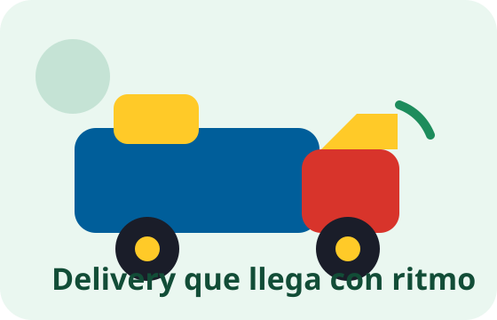

Cobertura
Zonas atendidas
La tienda reparte en 200 Millas, San Juan Macías y Los Portales del Aeropuerto, con operación local enfocada en San Juan Macías, Callao, Perú.
Delivery
Plaza San Juan Macías trabaja solo con entrega a domicilio. No hay recojo en tienda y el pedido mínimo es de S/ 50.00. Atendemos 200 Millas, San Juan Macías y Los Portales del Aeropuerto.

Cobertura
La tienda reparte en 200 Millas, San Juan Macías y Los Portales del Aeropuerto, con operación local enfocada en San Juan Macías, Callao, Perú.
Monto mínimo
El delivery se habilita desde S/ 50.00 o su equivalente en USD.
Pago
Después de registrar tu pedido, envías tu comprobante y validamos el pago para continuar.
Contacto
WhatsApp: 51944537419. Correo: liliet.polanco.peru@gmail.com.
FAQ local
Si tu compra es para 200 Millas, San Juan Macías o Los Portales del Aeropuerto, esta es la página base para entender cobertura, pedido mínimo y validación de pago.
Zona
Preferimos cubrir bien Callao en la zona objetivo antes de prometer entregas donde todavía no operamos con consistencia.
Seguimiento
Después del pedido puedes usar WhatsApp para compartir comprobante, validar pago y hacer seguimiento del estado de entrega.
Dirección
La siguiente etapa del checkout incluirá mapa de zona para marcar el punto exacto y autocompletar dirección de delivery.